R.version.string[1] "R version 4.6.1 (2026-06-24)"Deeper practice with solutions · each exercise is the pattern for a Guided Project task
Work these in your module-13-scales-facets project in Posit Cloud, or just read them. Every exercise uses penguins or gapminder, so the patterns are the same for everyone. The solutions are visible: try first, then open them. Download them as R scripts: exercises · solutions.
| Exercise | Pattern | Guided Project task |
|---|---|---|
| D1 · Label it | labs() with units, a subtitle, percent labels |
1 (A1, B1) |
| D2 · Choose a scale | linear or log | 2 (A2, B2) |
| D3 · The Lie Factor | is the size honest? | 2 (A2, B2) |
| D4 · Fixed or free panels | facet_wrap(), scales = "free_y" |
3 (A3, B3) |
| D5 · Two facets at once: sex and species | facet_grid() |
3 (A3, B3) |
| D6 · Uncertainty clouds | individual values next to resampled means | 4 (A4, B4) |
| D7 · Color for every reader | viridis, the color check, a second cue | 5 (A5, B5) |
| D8 · Check a deck | the minimum elements of a deck | 6 (slides) |
| D9 · More scale choices | size, gray fills, redundant cues | 5 and 2 |
Five short steps, in your module-13-scales-facets project. Every output below comes from R 4.6.1.
1. Which R? Posit Cloud uses R 4.6.1. R 4.5 and later have their own penguins, with shorter column names (step 5).
2. Are the packages installed? TRUE means installed.
[1] TRUE[1] TRUE3. Install only if step 2 said FALSE, once per project. (The same for palmerpenguins.)
4. Load the packages every new session. You install a package once per project; you load it with library() each time R starts.
5. Use the palmerpenguins version of penguins.
[1] "species" "island" "bill_length_mm"
[4] "bill_depth_mm" "flipper_length_mm" "body_mass_g"
[7] "sex" "year" [1] "species" "island" "bill_len" "bill_dep" "flipper_len"
[6] "body_mass" "sex" "year" :: means “from this package”, as in scales::percent in Session 1. Here it makes sure we get the palmerpenguins version of penguins, not the one built into R.
Last, the course’s colors, once per session:
Prepares Guided Project task 1 (A1, B1).
Goal. A reader should understand the plot without you there: a title that says what it shows, a subtitle with the data and its n (sample size: the number of penguins in each group), axis titles with units, a legend title, and percent labels for a share. (Session 1.)
Your turn. Label the share of Adelie penguins on each island.
Investigate. Which label would a reader miss most if you left it out?
ggplot(penguins, aes(y = island, fill = species == "Adelie")) +
geom_bar(position = "fill") +
labs(
title = "Torgersen's penguins are all Adelie",
subtitle = "Palmer penguins, 344 penguins on three islands",
x = "Share of the island's penguins (%)",
y = "Island",
fill = "Adelie"
) +
scale_x_continuous(labels = scales::percent)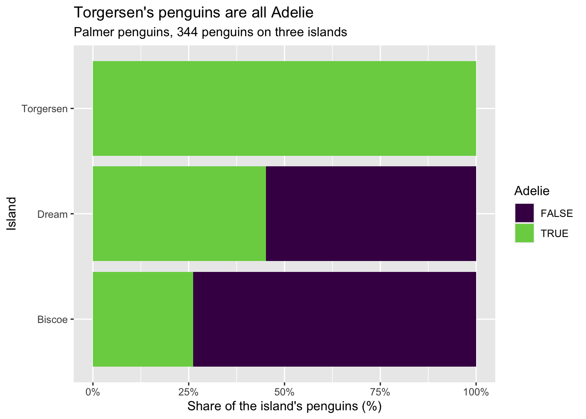
The title states the finding; the subtitle says which data and how many; the x-axis says “share of what” and its unit. Torgersen is 100% Adelie (52 of 52), Dream about 45% (56 of 124), Biscoe about 26% (44 of 168).
Prepares Guided Project task 2 (A2, B2).
Goal. Which scale fits the data? (Session 1.)
Your turn. Plot life expectancy against GDP per person in 2007, first on a linear x-axis, then on a log x-axis.
Investigate. Where are most countries on the linear axis? What does the log axis show that the linear one hides?
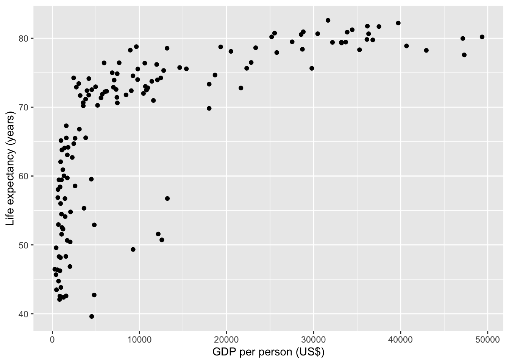
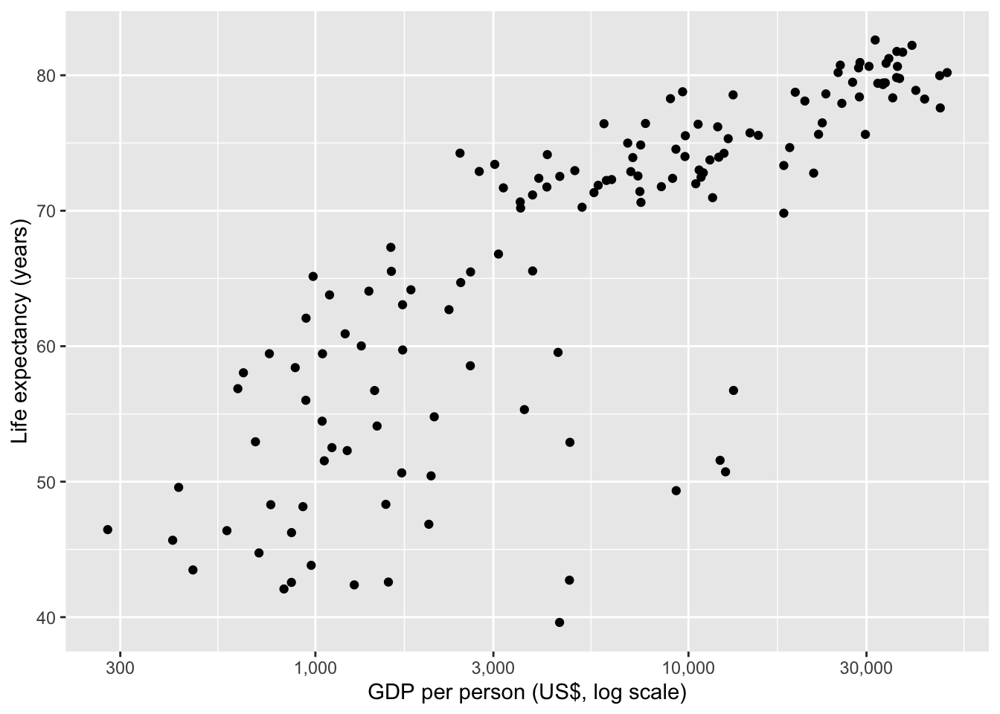
GDP per person runs from about $278 to $49,357 across 142 countries, and 66 of them are below $5,000: on a linear axis they crowd into the left edge. On a log axis each step is ten times the one before, so the poorer countries spread out and the pattern (life expectancy rises with each tenfold step) shows. Say “log scale” in the axis title: a reader who misses it reads the gaps wrong.
Prepares Guided Project task 2: a scale is honest only if sizes in the picture match the data.
The Lie Factor (Tufte, 2001, p. 57) compares the size of an effect in the picture with its size in the data: drawn ratio ÷ data ratio. 1 is honest; above 1 exaggerates; below 1 understates.
lie_factors <- tibble(
case = c("Module 12: penguin bars zoomed to start at 40",
"Minard's march, default line widths (1 to 6)",
"Minard's march, range = c(0.1, 8.5)"),
drawn_ratio = c((168 - 40) / (52 - 40), 6 / 1, 8.5 / 0.1),
data_ratio = c(168 / 52, 340000 / 4000, 340000 / 4000)
) %>%
mutate(lie_factor = drawn_ratio / data_ratio)
lie_factors# A tibble: 3 × 4
case drawn_ratio data_ratio lie_factor
<chr> <dbl> <dbl> <dbl>
1 Module 12: penguin bars zoomed to start at … 10.7 3.23 3.30
2 Minard's march, default line widths (1 to 6) 6 85 0.0706
3 Minard's march, range = c(0.1, 8.5) 85 85 1 Talk. Which case exaggerates, which understates, and which is honest? Why does the default width scale understate Minard’s losses so much?
scale_linewidth() draws widths from 1 to 6 by default: only 6 times. (In class you measured them with layer_data().)range = c(0.1, 8.5), 1: honest. 8.5 ÷ 0.1 = 85, the same ratio as the data.Prepares Guided Project task 3 (A3, B3).
Goal. One plot or many? And when the panels differ in size, fixed or free axes? (Session 2.)
Your turn. Plot each continent’s total population over time, one panel per continent. Then free the y-axis.
pop_by_continent <- gapminder %>%
group_by(continent, year) %>%
summarize(pop_millions = sum(pop) / 1e6, .groups = "drop")
p_pop <- ggplot(pop_by_continent, aes(x = year, y = pop_millions)) +
geom_line() +
labs(x = "Year", y = "Population (millions)")
p_pop + facet_wrap(vars(___))
p_pop + facet_wrap(vars(___), scales = "___")Investigate. On the fixed panels, what happened to Oceania between 1952 and 2007? On the free panels? Which version would mislead a reader, and how?
pop_by_continent <- gapminder %>%
group_by(continent, year) %>%
summarize(pop_millions = sum(pop) / 1e6, .groups = "drop")
p_pop <- ggplot(pop_by_continent, aes(x = year, y = pop_millions)) +
geom_line() +
labs(x = "Year", y = "Population (millions)")
p_pop + facet_wrap(vars(continent))
p_pop + facet_wrap(vars(continent), scales = "free_y")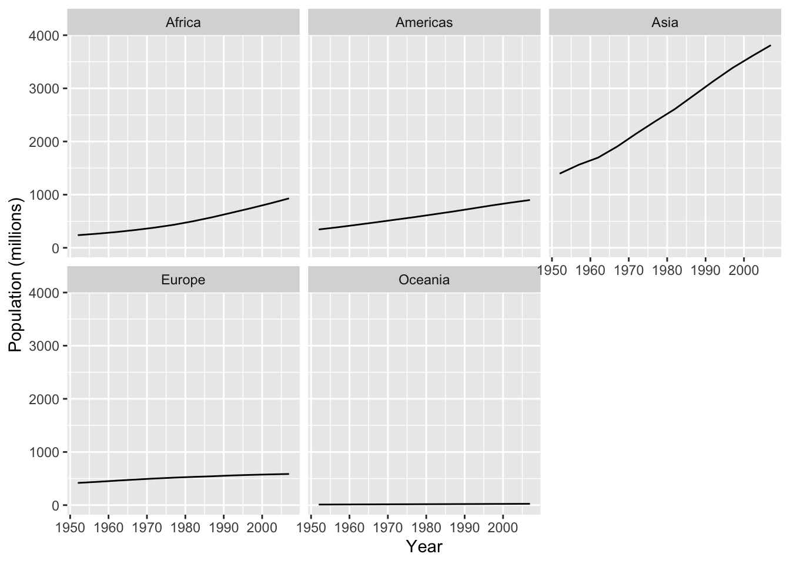
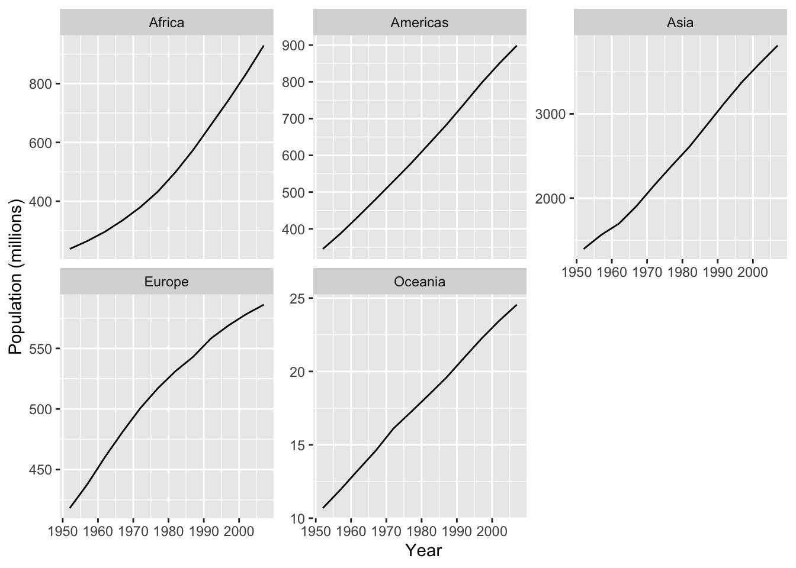
Fixed axes compare sizes: Asia grows from about 1,395 to 3,812 million, and Oceania (2 countries, 10.7 to 24.5 million) looks flat. Free axes compare shapes: Oceania more than doubles, like the others. Each is honest only if the reader notices the axes: with free y, say so in the caption, because panels of equal height no longer mean equal numbers.
Prepares Guided Project task 3: panels by two columns, and the n of what is left out.
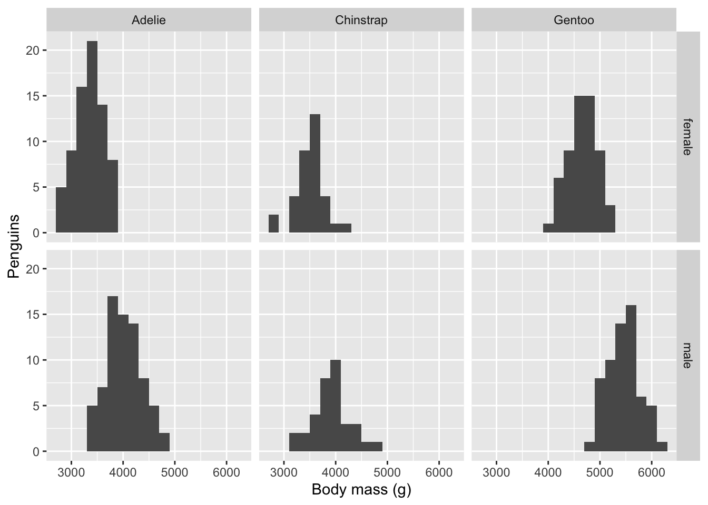
Talk. What can you compare across a row? Down a column? 11 penguins have no recorded sex (6 Adelie, 5 Gentoo) and are not in this plot: where would you tell the reader?
Across a row: the three species, for one sex (Gentoo are the heaviest). Down a column: females and males of one species (males are heavier in each). The shared axes make both comparisons fair. Say the 11 missing penguins in the caption or the text, with their n.
Prepares Guided Project task 4 (A4, B4).
Goal. Is a difference between two groups large or small? Compared to what? Put each penguin next to the means of 200 resampled samples, on the same axis. (Session 2.)
Your turn. Compare Adelie and Chinstrap flipper lengths. The prepared code draws each species’ penguins again (with replacement, the same number), 200 times, and keeps each sample’s mean. Then make one panel per kind.
set.seed(3901)
flippers <- penguins %>%
filter(species %in% c("Adelie", "Chinstrap")) %>%
drop_na(flipper_length_mm) %>%
select(species, flipper_length_mm)
means <- map(1:200, function(i) {
flippers %>%
group_by(species) %>%
slice_sample(prop = 1, replace = TRUE) %>%
summarize(flipper_length_mm = mean(flipper_length_mm))
}) %>%
bind_rows()
clouds <- bind_rows(
flippers %>% mutate(kind = "Individual penguins"),
means %>% mutate(kind = "Resampled means")
)Investigate. In which panel do the two clouds overlap? What does that say about two penguins, and about the two means?
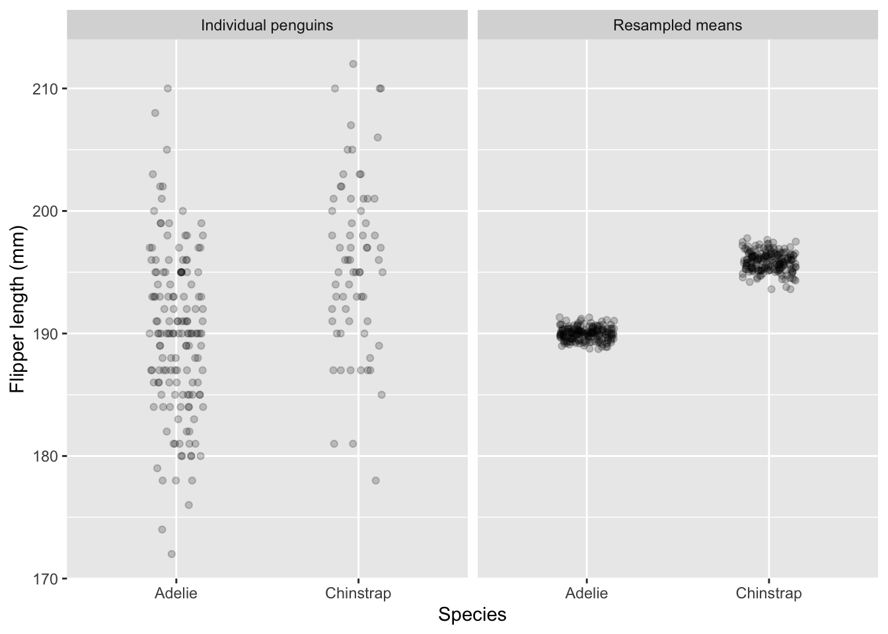
# A tibble: 4 × 6
kind species n mean lowest highest
<chr> <fct> <int> <dbl> <dbl> <dbl>
1 Individual penguins Adelie 151 190. 172 210
2 Individual penguins Chinstrap 68 196. 178 212
3 Resampled means Adelie 200 190. 189. 191.
4 Resampled means Chinstrap 200 196. 194. 198.In the left panel the clouds overlap almost completely: Adelie flippers run from 172 to 210 mm, Chinstrap from 178 to 212 mm, so many Adelie penguins have longer flippers than many Chinstrap ones. In the right panel the 200 resampled means don’t overlap: Adelie’s from 188.7 to 191.3 mm, Chinstrap’s from 193.6 to 197.8 mm. The gap between the means, 5.9 mm (189.95 and 195.82), is small next to the spread of the penguins (sd 6.5 and 7.1 mm) but large next to how far each mean moves from sample to sample. Say which you compare: individuals or means. Chinstrap’s cloud of means is wider: 68 penguins, against Adelie’s 151.
In the Guided Project, make_clouds() does the resampling for you.
Draw 200 samples of 10, of 50, and of each species’ full size (with replacement), and plot each sample’s mean flipper length.
set.seed(3901)
flippers <- drop_na(penguins, flipper_length_mm)
cloud <- map_dfr(c(10, 50, NA), function(size) {
map_dfr(1:200, function(i) {
grouped <- group_by(flippers, species)
drawn <- if (is.na(size)) {
slice_sample(grouped, prop = 1, replace = TRUE) # each species' n
} else {
slice_sample(grouped, n = size, replace = TRUE)
}
drawn %>%
summarize(mean_mm = mean(flipper_length_mm), .groups = "drop") %>%
mutate(sample = if (is.na(size)) "All penguins" else
paste(size, "penguins"))
})
}) %>%
mutate(sample = fct_inorder(sample))
ggplot(cloud, aes(x = mean_mm, y = species)) +
geom_jitter(height = 0.2, alpha = 0.3) +
facet_wrap(vars(sample), ncol = 1) +
labs(x = "Mean flipper length of one sample (mm)", y = NULL)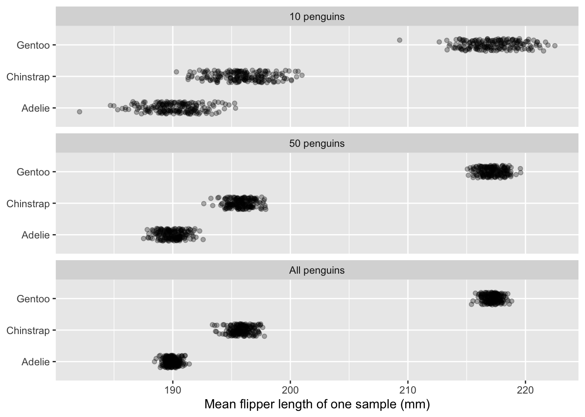
# A tibble: 9 × 3
sample species spread_sd
<fct> <fct> <dbl>
1 10 penguins Adelie 2.10
2 10 penguins Chinstrap 2.14
3 10 penguins Gentoo 2.09
4 50 penguins Adelie 0.932
5 50 penguins Chinstrap 0.932
6 50 penguins Gentoo 0.908
7 All penguins Adelie 0.520
8 All penguins Chinstrap 0.824
9 All penguins Gentoo 0.612The bigger the sample, the less its mean moves from one sample to the next. For Adelie, the spread (sd) of the 200 means is about 2.1 mm with 10 penguins, 0.93 mm with 50, and 0.52 mm with all 151. In one sentence, the central limit theorem: means of larger samples pile up in a narrower, bell-shaped cloud around the true mean, and the cloud’s width shrinks with the square root of the sample size. So “compared to what?” matters: a difference between two means is big or small compared to that width (the se), not to the spread of the penguins themselves (the sd).
Prepares Guided Project task 5 (A5, B5).
Goal. Colors every reader can tell apart, and never color alone. (Session 1.)
species_labels <- penguins %>%
drop_na(flipper_length_mm, bill_length_mm) %>%
group_by(species) %>%
summarize(flipper_length_mm = mean(flipper_length_mm),
bill_length_mm = max(bill_length_mm))
ggplot(penguins, aes(x = flipper_length_mm, y = bill_length_mm,
color = species)) +
geom_point(alpha = 0.6) +
geom_label(data = species_labels, aes(label = species)) +
scale_color_viridis_d(end = 0.8) +
theme(legend.position = "none") +
labs(x = "Flipper length (mm)", y = "Bill length (mm)")
gapminder %>%
filter(year == 2007) %>%
ggplot(aes(x = gdpPercap, y = lifeExp, color = continent)) +
geom_point() +
scale_x_log10(labels = scales::comma) +
scale_color_viridis_d(end = 0.8) +
labs(x = "GDP per person (US$, log scale)",
y = "Life expectancy (years)", color = "Continent")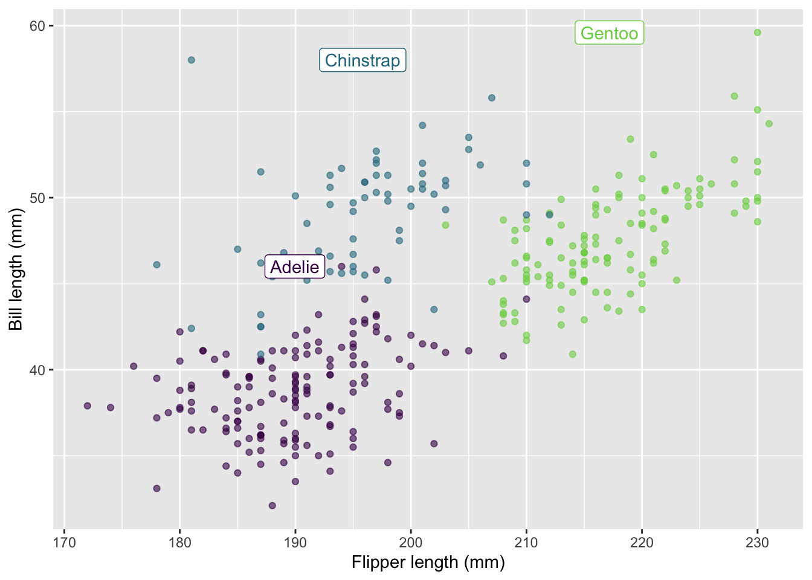
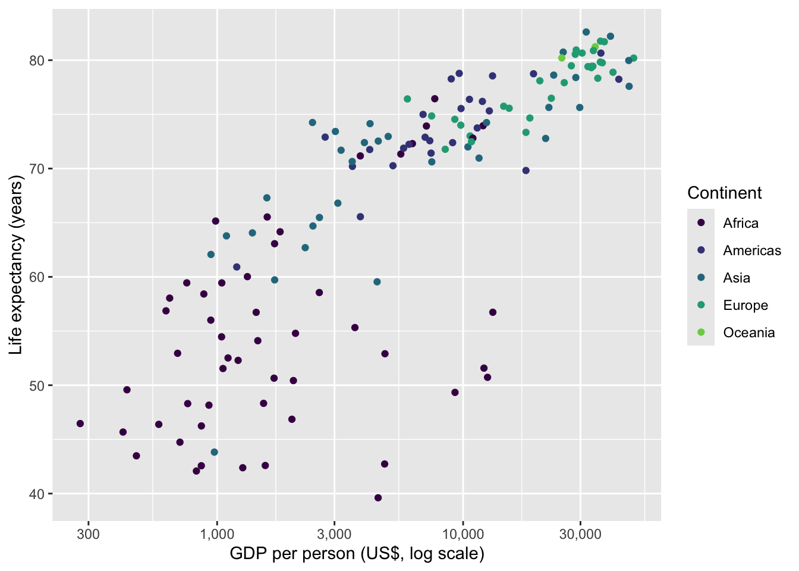
What the numbers mean. We simulate how the colors look to readers with three types of color blindness, then measure how far apart the two closest colors are (a standard color difference, delta E). Bigger is easier to tell apart; 20 is our course’s line for clearly different. The red-green simulations come from a validated model; the blue-yellow one is an approximation. (In the Guided Project, color_check() makes this table for your plot, and simulate_plot() redraws your plot in the simulated colors.)
| view | 3 species | 5 continents |
|---|---|---|
| Red-green (deuteranopia) | 30.5 | 17.5 |
| Red-green (protanopia) | 41.1 | 19.7 |
| Blue-yellow (approximate) | 29.7 | 17.2 |
Talk. Which plot passes the course rule (at least 20 in all three rows)? What could carry the continents instead of color alone?
Three species pass (30.5, 41.1 and 29.7); five continents fail (17.5, 19.7 and 17.2): with more groups the colors have less room. The penguin plot also names each species on the plot, so color is never the only cue. For the continents: panels (facet_wrap(vars(continent)), D4), direct labels, or fewer groups, combined with care and said in the caption.
Where the numbers come from. The simulations use the model of Machado, Oliveira and Fernandes (2009), at full severity. The red-green simulations come from a validated model; the blue-yellow one is an approximation.
Machado, G. M., Oliveira, M. M., & Fernandes, L. A. F. (2009). A physiologically-based model for simulation of color vision deficiency. IEEE Transactions on Visualization and Computer Graphics, 15(6), 1291–1298. https://doi.org/10.1109/TVCG.2009.113
Prepares Guided Project task 6 (your slides).
Goal. Check a finished deck against the minimum elements. (Session 2.)
Your turn. Open the penguins slides in the Example menu of your own site (or the course example). Find each element: title; question (naming the groups compared); data (source, what one row is, how many rows); figure; what it shows (a headline that states the finding); limitations; sources and AI use.
Investigate. Which elements share a slide? Which one is missing, and does your deck need it?
The question is the title (“Do penguin species differ in flipper length?”). The headline slide states the finding in its heading, with the figure under it. The last slide holds what it shows, the limitations (344 penguins, three islands, 2 without a flipper measurement) and the data source: elements can share a slide. There is no AI use line, because the example wasn’t made with AI; your deck needs one (“AI use: none.” counts).
Prepares Guided Project task 5 (a second cue besides color) and task 2 (honest sizes).
p_size <- gapminder %>%
filter(year == 2007) %>%
ggplot(aes(x = gdpPercap, y = lifeExp, size = pop)) +
geom_point(alpha = 0.5) +
scale_x_log10(labels = scales::comma) +
labs(x = "GDP per person (US$, log scale)",
y = "Life expectancy (years)", size = "Population")
p_size + scale_size_area(max_size = 12, labels = scales::comma)
p_size + scale_radius(range = c(1, 12), labels = scales::comma)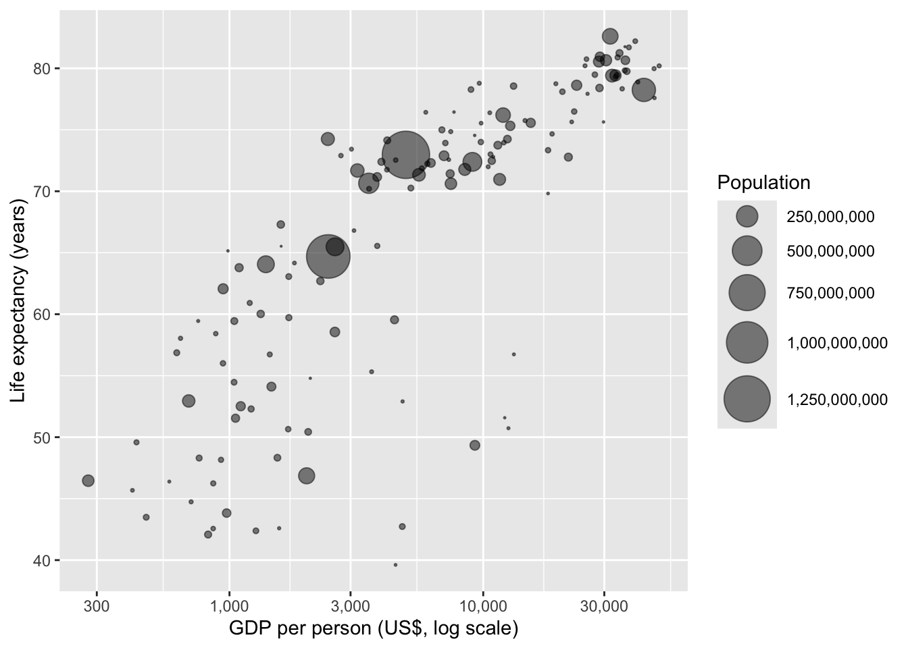
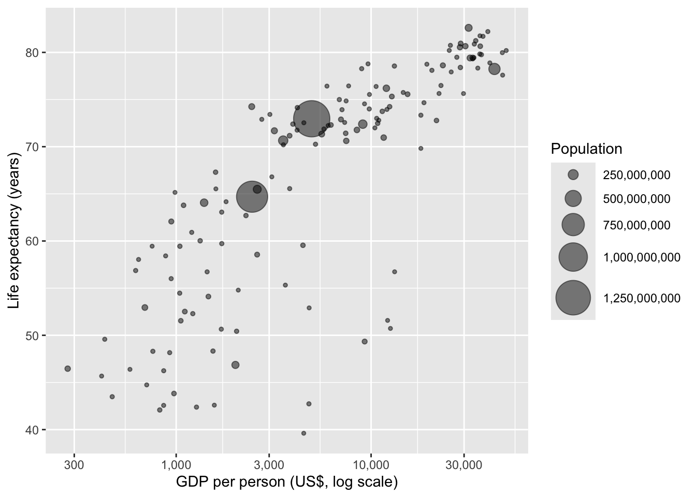
Readers judge circles by their area. With scale_size_area() area is proportional to population, so a country twice as large has twice the ink. With scale_radius() the radius is proportional, so the area grows with the square: big countries are exaggerated (a Lie Factor above 1).
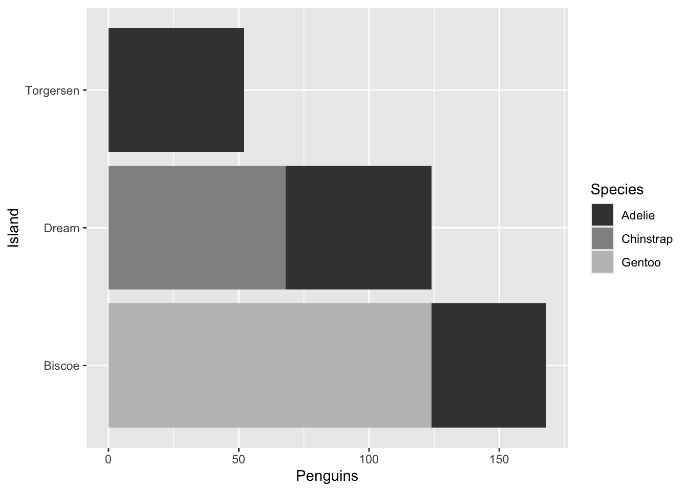
Hatching and stripes can shimmer on screen (Tufte’s “optical art”). Plain gray shades print well and never vibrate; keep them few, and far enough apart.
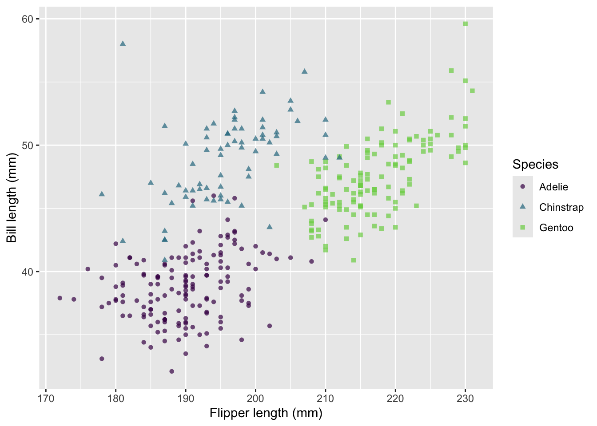
Mapping species to both color and shape is redundant on purpose: it helps a reader who can’t tell the colors apart, or who prints the page in gray. It helps most with few groups and few overlapping points; with many groups, shapes get hard to tell apart too, and panels work better.
Data: Horst, A. M., Hill, A. P., & Gorman, K. B. (2020). palmerpenguins: Palmer Archipelago (Antarctica) penguin data (R package). Bryan, J. (2025). gapminder: Data from Gapminder (R package version 1.0.1), from Gapminder (https://www.gapminder.org). Minard’s numbers: HistData::Minard.troops (Friendly, Dray, Li & Bellhouse, 2026, HistData, R package version 1.1.1), used in class. Color simulation: Machado, Oliveira & Fernandes (2009), in D7.